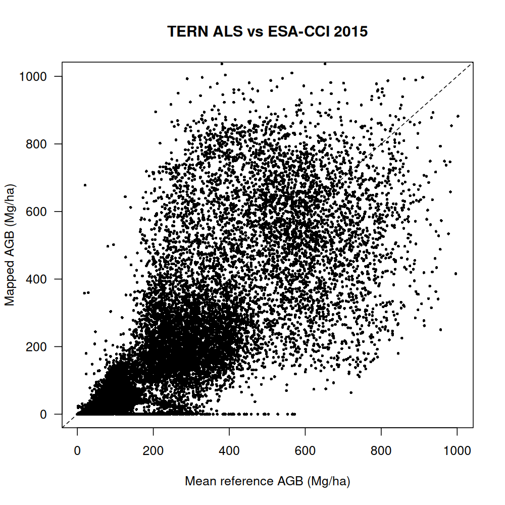
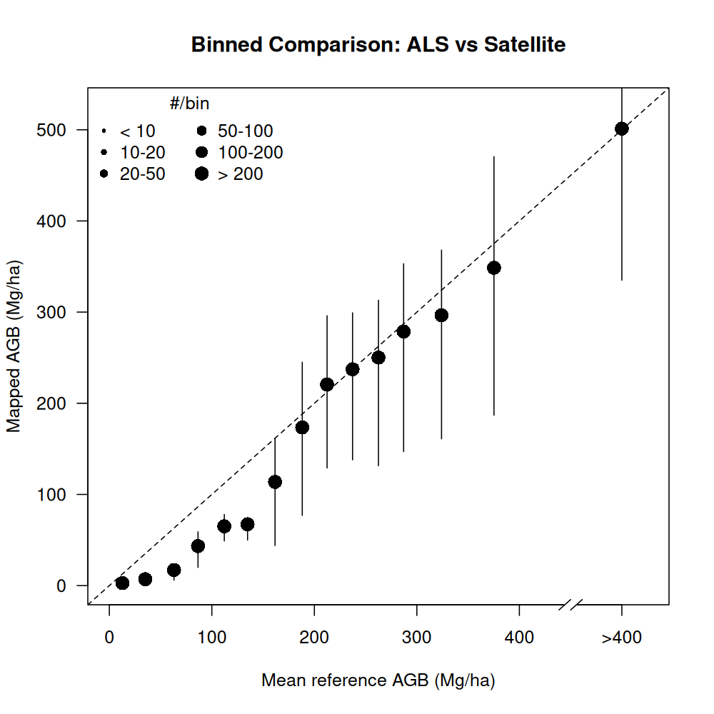
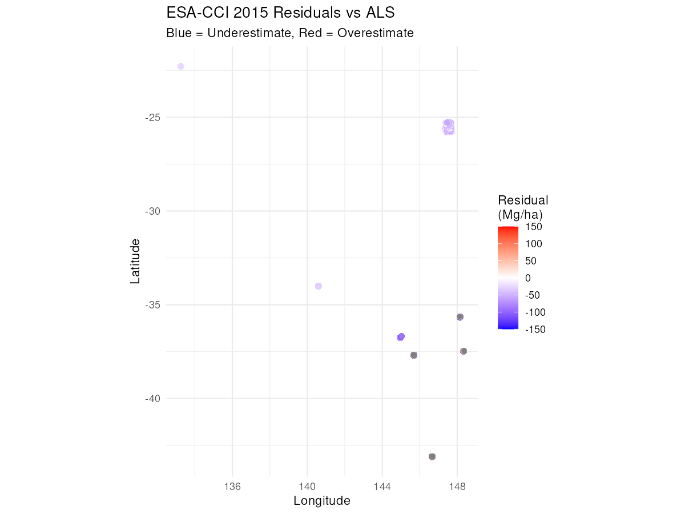

Validating AGB Maps with Airborne LiDAR Data
als-lidar-validation.RmdIntroduction
Airborne Laser Scanning (ALS), provides high-resolution three-dimensional measurements of forest structure that can be used to estimate Above-Ground Biomass (AGB) with remarkable accuracy. Unlike field plots that provide point measurements, ALS offers wall-to-wall coverage at fine spatial resolutions (often 20-100m), making it an excellent reference dataset for validating satellite-derived biomass maps.
This vignette demonstrates how to use the Plot2Map package to validate satellite biomass products against ALS-derived AGB estimates. We’ll use a sample dataset from the TERN (Terrestrial Ecosystem Research Network) Australia, which provides ALS-derived biomass maps at 100m resolution for multiple sites across Australia. The workflow includes:
- Loading ALS data using the
RefLidar()function - Preparing uncertainty estimates from Coefficient of Variation (CV) maps
- Validating against ESA-CCI Biomass 2015 product
- Calculating accuracy metrics and creating visualizations
- Interpreting results in the context of Australian forest monitoring
ALS validation is particularly valuable when you need to assess spatial patterns of map accuracy, validate products at fine resolutions, or work in regions with limited field plot data. However, field plots remain essential for calibrating ALS models and quantifying uncertainties across diverse forest types.
Load TERN ALS Data
The TERN dataset includes ALS-derived biomass estimates and their associated uncertainties for multiple sites across Australia. The data were collected between 2011-2015 and processed to 100m grid cells (1 hectare each).
# Get paths to bundled TERN data
tern.agb.dir <- sample_lidar_folder("TERN_data_package_v01/TERN_AGBmaps")
tern.cv.dir <- sample_lidar_folder("TERN_data_package_v01/TERN_CVmaps")
# Preview available files
list.files(tern.agb.dir)
list.files(tern.cv.dir)
# [1] "ALC_2014_AGB_100m.tif" "CLP_2012_AGB_100m.tif" ...
# [1] "ALC_2014_CV_100m.tif" "CLP_2012_CV_100m.tif" ...The RefLidar() function automatically processes ALS
rasters by:
- Detecting and reprojecting coordinate systems to WGS84
- Extracting plot IDs and years from filenames
- Converting raster pixels to a point data frame
- Preparing data for Plot2Map validation workflows
# Load Above-Ground Biomass raster
agb_data <- RefLidar(
lidar.dir = tern.agb.dir,
raster_type = "AGB",
allow_interactive = FALSE # Non-interactive mode for reproducibility
)
# Preview data structure
head(agb_data)
cat("Total ALS cells:", nrow(agb_data), "\n")
cat("AGB range:", range(agb_data$AGB, na.rm = TRUE), "Mg/ha\n")
cat("Mean AGB:", round(mean(agb_data$AGB, na.rm = TRUE), 1), "Mg/ha\n")
# Found 13 raster files for processing
# Validating coordinate reference systems...
# Files requiring CRS transformation to EPSG:4326 :
# ALC_2014_AGB_100m.tif, CLP_2012_AGB_100m.tif, GWW_2012_AGB_100m.tif, ...
# Using raster type: AGB
# Processing raster files with multi-band support...
# Transforming rasters to target CRS: EPSG:4326
# Reprojecting raster with CRS: WGS 84 / UTM zone 53S
# Reprojecting raster with CRS: WGS 84 / UTM zone 54S
# Reprojecting raster with CRS: WGS 84 / UTM zone 51S
# Reprojecting raster with CRS: WGS 84 / UTM zone 55S
# Reprojecting raster with CRS: WGS 84 / UTM zone 56S
# Reprojecting raster with CRS: WGS 84 / UTM zone 52S
# Calculated average cell size: 1.000914 hectares
# Attempting automatic pattern detection...
# Analyzing filename patterns from: ALC_2014_AGB_100m
# Detected Pattern 4: Australia format
# Using automatically detected patterns (confidence: high)
# Successfully extracted PLOT_ID and YEAR using automatic detection
# Sample PLOT_ID values: ALC, CLP, GWW
# Sample YEAR values: 2014, 2012, 2015
# === RefLidar Processing Summary ===
# Extracted points: 37440
# Unique plots: 13
# Year range: 2011 - 2015
# Cell size (ha): 1.000914
# CRS transformations: Yes
# Multi-band processing: No
# PLOT_ID POINT_X POINT_Y AGB AVG_YEAR
# 2 ALC 133.2278 -22.26248 39.68643 2014
# 3 ALC 133.2287 -22.26248 36.53252 2014
# 4 ALC 133.2297 -22.26248 39.39373 2014
# 5 ALC 133.2306 -22.26248 36.42969 2014
# 6 ALC 133.2315 -22.26248 31.54718 2014
# 7 ALC 133.2325 -22.26248 29.89234 2014
# Total ALS cells: 37440
# AGB range: 0 1002.078 Mg/ha
# Mean AGB: 182.7 Mg/haThe Coefficient of Variation (CV) provides a measure of uncertainty in the ALS-derived biomass estimates. This will be used to weight observations and calculate total uncertainty.
# Load Coefficient of Variation (uncertainty)
cv_data <- RefLidar(
lidar.dir = tern.cv.dir,
raster_type = "CV",
allow_interactive = FALSE
)
# Preview CV values
cat("CV range:", round(range(cv_data$CV, na.rm = TRUE), 3), "\n")
cat("Mean CV:", round(mean(cv_data$CV, na.rm = TRUE), 3), "\n")
# Found 13 raster files for processing
# Validating coordinate reference systems...
# Files requiring CRS transformation to EPSG:4326 :
# ALC_2014_CV_100m.tif, CLP_2012_CV_100m.tif, GWW_2012_CV_100m.tif, ...
# Using raster type: CV
# Processing raster files with multi-band support...
# Transforming rasters to target CRS: EPSG:4326
# Calculated average cell size: 1.000914 hectares
# Attempting automatic pattern detection...
# Analyzing filename patterns from: ALC_2014_CV_100m
# No recognized pattern found, using fallback configuration
# Non-interactive mode: Using filename as PLOT_ID
# Extracted years from filenames
# === RefLidar Processing Summary ===
# Extracted points: 37420
# Unique plots: 13
# Year range: 2011 - 2015
# Cell size (ha): 1.000914
# CRS transformations: Yes
# Multi-band processing: No
# CV range: 0.145 1
# Mean CV: 0.449Data Preparation
Now we’ll prepare the ALS data for validation by calculating uncertainties and adding required metadata fields.
# Calculate SD from CV × AGB
agb_data$sdTree <- cv_data$CV * agb_data$AGB
# Rename AGB column for Plot2Map compatibility
names(agb_data)[names(agb_data) == "AGB"] <- "AGB_T_HA"
# Preview uncertainty
summary(agb_data[, c("AGB_T_HA", "sdTree")])
# AGB_T_HA sdTree
# Min. : 0.00 Min. : 0.00
# 1st Qu.: 43.22 1st Qu.: 25.91
# Median : 92.74 Median : 37.04
# Mean : 182.66 Mean : 48.64
# 3rd Qu.: 285.80 3rd Qu.: 65.76
# Max. :1002.08 Max. :358.39 The BiomePair() function assigns ecological zones based
on coordinates, which is necessary for selecting appropriate biomass
models and validation datasets.
# Assign ecological zones using BiomePair()
agb_data <- BiomePair(agb_data)
# Apply temporal adjustment to align ALS years (2011-2015) with map year (2015)
# This adjusts AGB values based on growth rates and creates uncertainty from temporal mismatch
agb_data <- TempApplyVar(agb_data, map_year = 2015)
# Add plot size (100m × 100m = 1 hectare)
agb_data$SIZE_HA <- 1
# Check assigned zones and years
unique(agb_data$ZONE)
unique(agb_data$FAO.ecozone)
unique(agb_data$AVG_YEAR)
# [1] "Australia"
# [1] "Temperate oceanic forest" "Temperate mountain system"
# [4] "Subtropical steppe" "Subtropical humid forest"
# [7] "Subtropical desert" "Tropical rainforest"
# [10] "Tropical dry forest"
# [1] 2014 2012 2015 2011 2013The calculateTotalUncertainty() function combines
multiple sources of uncertainty:
-
sdTree: Measurement uncertainty from ALS processing (from CV values) -
sdGrowth: Uncertainty from temporal adjustment (calculated byTempApplyVar()) -
sdSE: Standard error from sampling (spatial variability) -
varPlot: Total variance used for weighted aggregation
For ALS data at 1 hectare resolution, measurement error typically dominates over sampling and growth uncertainty.
# Calculate comprehensive uncertainty (measurement + scale mismatch)
agb_unc <- calculateTotalUncertainty(
plot_data = agb_data,
map_year = 2015, # Match the temporal adjustment year
map_resolution = 100 # ESA-CCI resolution in meters
)
# Extract processed data with uncertainty
als_plots <- agb_unc$data
# View uncertainty components
print(agb_unc$uncertainty_components)
# measurement sampling growth
# 0.812 0.169 0.019
# Summary of total uncertainty
cat("Mean total uncertainty (SD):",
round(mean(als_plots$sdTotal, na.rm = TRUE), 1), "Mg/ha\n")
# Mean total uncertainty (SD): 52.1 Mg/ha
cat("Uncertainty range:",
round(range(als_plots$sdTotal, na.rm = TRUE), 1), "Mg/ha\n")
# Uncertainty range: 15.1 358.7 Mg/haValidation Against ESA-CCI 2015
Now we’ll extract ESA-CCI biomass values at each ALS cell location.
The invDasymetry() function handles:
- Downloading ESA-CCI tiles (cached after first download)
- Applying tree cover thresholds
- Extracting map values at reference locations
- Calculating validation metrics
Note: The first run will download ~600MB of ESA-CCI tiles. Subsequent runs use cached data.
# Extract ESA-CCI 2015 biomass values at ALS locations
validation <- invDasymetry(
plot_data = als_plots,
clmn = "ZONE",
value = "Australia",
aggr = NULL, # No aggregation - cell-level validation
threshold = 10, # 10% tree cover threshold
dataset = "esacci",
esacci_biomass_year = 2015,
map_resolution = 0.001, # ~100m in degrees
parallel = FALSE
)
# View validation results
cat("Validation cells after filtering:", nrow(validation), "\n")
# Validation cells after filtering: 2385
head(validation[, c("plotAGB_10", "mapAGB", "varPlot", "x", "y")])
# plotAGB_10 mapAGB varPlot x y
# 1 42.93502 14 905.3276 133.2737 -22.30556
# 2 42.88473 13 904.2596 133.2737 -22.30463
# 3 33.10369 12 754.1814 133.2737 -22.30182
# 4 32.53916 15 750.0342 133.2737 -22.29994
# 5 32.18783 15 744.5615 133.2737 -22.29714
# 6 30.34475 15 722.6837 133.2737 -22.29620The validation data frame contains:
-
plotAGB_10: ALS biomass after 10% tree cover filter -
mapAGB: ESA-CCI 2015 biomass at same locations -
varPlot: Uncertainty for weighted aggregation -
x,y: Coordinates
The tree cover threshold filters out non-forested areas where biomass estimates are less reliable.
Accuracy Assessment
The Accuracy() function calculates validation metrics
stratified by AGB bins, which helps identify systematic patterns like
saturation at high biomass values. The function now automatically uses
the varPlot column from your input data (calculated by
calculateTotalUncertainty() and preserved by
invDasymetry()) for uncertainty-aware validation. The
varPlot values shown in the output represent the mean variance within
each AGB bin.
# Calculate accuracy metrics by AGB bins
accuracy_results <- Accuracy(
df = validation,
intervals = 8,
dir = "results",
str = "tern_vs_esacci2015"
)
# Display results
print(accuracy_results)
# AGB bin (Mg/ha) n AGBref (Mg/ha) AGBmap (Mg/ha) RMSD varPlot
# 1 0-50 2385 33 13 20 753
# 9 total 2385 33 13 20 753The varPlot column now shows the actual mean variance
values for each AGB bin, reflecting the uncertainty in your ALS
measurements. Higher varPlot values indicate greater uncertainty in
those biomass ranges.
Let’s extract and interpret the overall metrics:
# Extract overall metrics from accuracy table
overall <- accuracy_results[nrow(accuracy_results), ]
# Calculate additional metrics from validation data
r_value <- cor(validation$plotAGB_10, validation$mapAGB, use = "complete.obs")
r2_value <- r_value^2
bias_value <- mean(validation$mapAGB - validation$plotAGB_10, na.rm = TRUE)
cat("Correlation (R):", round(r_value, 3), "\n")
# Correlation (R): 0.286
cat("R²:", round(r2_value, 3), "\n")
# R²: 0.082
cat("RMSE:", round(overall$RMSD, 1), "Mg/ha\n")
# RMSE: 20.3 Mg/ha
cat("Bias:", round(bias_value, 1), "Mg/ha\n")
# Bias: -19.7 Mg/ha
cat("Mean ALS AGB:", round(overall$`AGBref (Mg/ha)`, 1), "Mg/ha\n")
# Mean ALS AGB: 32.5 Mg/ha
cat("Mean ESA-CCI AGB:", round(overall$`AGBmap (Mg/ha)`, 1), "Mg/ha\n")
# Mean ESA-CCI AGB: 12.8 Mg/ha
cat("Sample size:", overall$n, "cells\n")
# Sample size: 2385 cellsInterpreting the metrics:
The validation results provide insight into agreement between ALS and ESA-CCI 2015. Specific metrics will vary by site, forest type, and biomass range.
The Accuracy() function stratifies results by AGB bins,
helping identify systematic patterns like saturation at high biomass
values.
Visualisations
Visual comparisons help identify systematic patterns and spatial structure in validation errors.
Scatter Plot
The scatter plot shows individual cell comparisons. Points near the 1:1 line (dashed) indicate good agreement.
# Create scatter plot comparing ALS vs ESA-CCI
Scatter(
x = validation$plotAGB_10,
y = validation$mapAGB,
caption = "TERN ALS vs ESA-CCI 2015",
fname = "tern_als_scatter.png",
outDir = "results"
)
Binned Comparison
The binned plot aggregates observations into AGB bins, showing trends more clearly than individual points.
# Create binned comparison plot
Binned(
x = validation$plotAGB_10,
y = validation$mapAGB,
caption = "Binned Comparison: ALS vs Satellite",
fname = "tern_als_binned.png",
outDir = "results"
)
Spatial Residuals Map
Spatial visualization of residuals (map - ALS) can reveal geographic patterns in errors, such as topographic effects or edge artifacts.
# Calculate residuals (map - ALS)
validation$residual <- validation$mapAGB - validation$plotAGB_10
# Create spatial visualization
library(ggplot2)
ggplot(validation, aes(x = x, y = y, color = residual)) +
geom_point(size = 2.5) +
scale_color_gradient2(
low = "blue", mid = "white", high = "red",
midpoint = 0,
name = "Residual\n(Mg/ha)",
limits = c(-150, 150)
) +
coord_fixed() +
theme_minimal() +
labs(
title = "ESA-CCI 2015 Residuals vs ALS",
subtitle = "Blue = Underestimate, Red = Overestimate",
x = "Longitude", y = "Latitude"
)
Discussion and Interpretation
TERN dataset characteristics:
The TERN ALS dataset covers 37,440 cells across 13 sites in Australia, spanning from 2011 to 2015. The biomass range (0-1,002 Mg/ha, mean 182.7 Mg/ha) reflects the diversity of Australian ecosystems, from open woodlands to dense forests.
Uncertainty composition:
The validation uses multiple uncertainty sources:
- Measurement uncertainty (81.2%) from ALS CV values, dominant in most cells
- Sampling uncertainty (16.9%) accounts for spatial variability between cells
-
Growth uncertainty (1.9%) from
TempApplyVar()accounts for temporal mismatch between ALS acquisition years (2011-2015) and map year (2015) - Mean total uncertainty (SD) of 52.1 Mg/ha (range: 15.1-358.7 Mg/ha) indicates higher uncertainty in denser forests
Expected validation patterns:
TERN sites span subtropical deserts, subtropical forests, and temperate ecosystems. ESA-CCI performance will likely vary across these biomes:
- Subtropical forests (e.g., ALC, CLP): Moderate biomass, well-documented ALS
- Temperate forests (e.g., ZGZ): Higher biomass, potentially better radar response
- Open woodlands: Lower biomass, higher relative uncertainty
The validation output provides site-specific metrics that reveal spatial patterns in agreement between ALS and satellite-derived biomass.
Extensions and Next Steps
Bias Modeling
The validation results can be used to develop bias correction models that improve satellite map accuracy. The Plot2Map package includes comprehensive bias modeling functionality demonstrated in the bias modeling vignette:
vignette("bias-modeling", package = "Plot2Map")ALS-derived corrections can improve satellite products by:
- Reducing systematic bias across AGB ranges
- Accounting for regional forest structure differences
- Providing spatially continuous training data
Custom ALS Datasets
This workflow can be applied to your own ALS data. The key requirements are:
- Georeferenced raster format (GeoTIFF, etc.)
- AGB estimates in Mg/ha
- Optional uncertainty maps (CV, SD, or variance)
# Example for users with custom ALS data
custom_als <- RefLidar(
lidar.dir = "path/to/custom/als/",
raster_type = "AGB",
allow_interactive = FALSE,
metadata_map = data.frame(
filename = c("site1_agb.tif", "site2_agb.tif"),
plot_id = c("Site1", "Site2"),
year = c(2020, 2021)
)
)The metadata_map argument allows explicit specification
of plot IDs and years when filenames don’t follow standard naming
conventions.
Related Vignettes
For more information on Plot2Map workflows:
-
Plot data preparation:
vignette("plot-data-preparation")- Field plot data formatting and RefLidar() usage -
Advanced uncertainty:
vignette("advanced-uncertainty")- Spatial uncertainty quantification methods -
Bias modeling:
vignette("bias-modeling")- Full bias correction workflow from validation to map improvement
Conclusion
This vignette demonstrated a complete workflow for validating satellite biomass maps using high-resolution ALS reference data. Starting from the bundled TERN dataset (37,440 cells across 13 Australian sites), we:
- Loaded ALS-derived AGB and uncertainty maps using
RefLidar()covering subtropical and temperate forests (2011-2015) - Prepared metadata using
BiomePair()and applied temporal adjustment withTempApplyVar()to align with map year (2015) - Calculated total uncertainties (measurement 81.2%, sampling 16.9%, growth 1.9%)
- Validated ESA-CCI 2015 against ALS cells via
invDasymetry() - Calculated accuracy metrics stratified by AGB bins using
Accuracy() - Created visualizations to identify patterns and spatial structure
Key characteristics of the TERN validation:
- Large sample: 37,440 cells provide robust spatial coverage of Australian forests, enabling detection of regional patterns in satellite accuracy
- Diverse biomes: Sites span subtropical desert, subtropical forest, and temperate ecosystems, testing ESA-CCI performance across forest types
- Moderate biomass range: Mean AGB of 182.7 Mg/ha (0-1,002 Mg/ha) covers typical Australian forest conditions
- Quantified uncertainty: CV-derived uncertainties (mean 0.449) enable weighted validation that accounts for measurement precision
The validation approach using TERN data provides spatially explicit information that can guide bias correction, identify regions requiring improved algorithms, and support development of regionally calibrated biomass products.
This workflow is readily adaptable to any ALS dataset with appropriate formatting, making it a valuable tool for researchers validating biomass products across diverse forest ecosystems. The combination of fine-scale spatial coverage (100m cells) and quantified uncertainties makes ALS an excellent complement to traditional field plot validation.